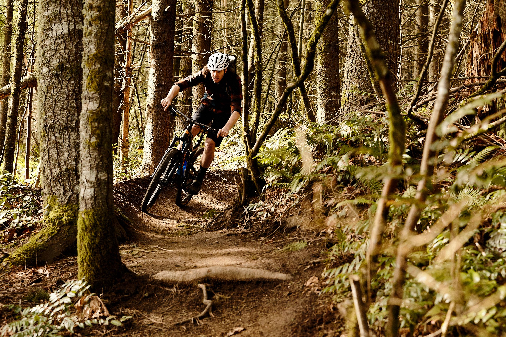

What I did in June
In the month of June, I did quite a bit, I ended school and prepared for summer break. Once I finished school, I began doing many outdoor activities such as going biking and hiking, and also walked my dog a lot more which was good. I also did many of my classes for Drivings Ed which took a decent portion of my time and also did a lot of practicing driving on the road which was fun. When I was inside my house, I would spend time with my family, play games, do some coding and take advantage of the fact that I was able to go to sleep later and wake up later.
